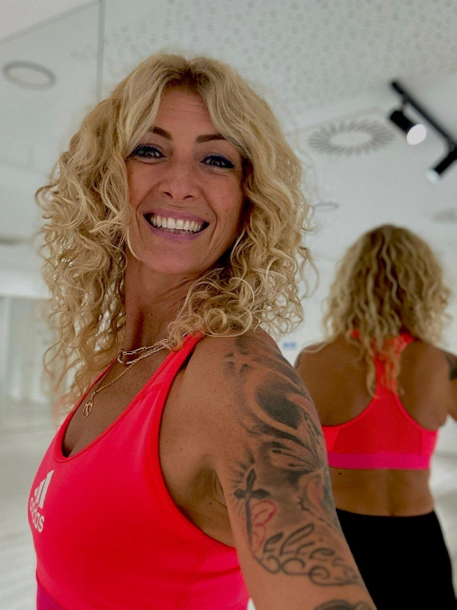
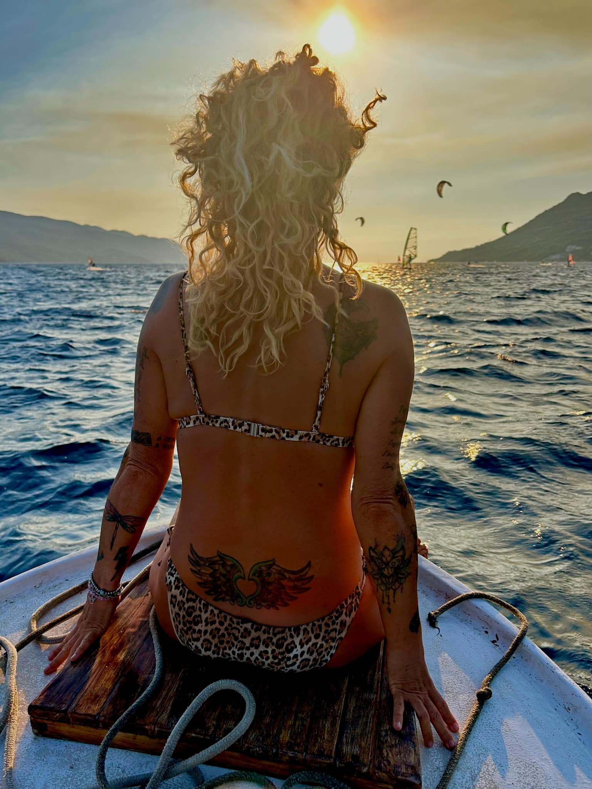

Prenatal · Postnatal · Zagreb
Stručno osmišljeni treninzi za svaku fazu ženskog života — od trudnoće i poroda do perimenopauze. Jer briga o sebi nije luksuz, nego nužnost.

Dobro došli
NanaFitMama je nastajala i razvijala se godinama — prvo kao potreba za vježbanjem u trudnoći, a zatim kao potreba za tjelovježbom i rehabilitacijom nakon poroda. I na kraju, kao potreba tijela da bude najbolja verzija sebe u perimenopauzi i menopauzi.
Ženama je izazovno prolaziti različite hormonske etape, ali uz pravi trening, svaki korak postaje snažan i lijep.
Budi i ti FIT mama
"Birajte isključivo pametno i stručno osmišljene treninge za vrijeme prenatala, postnatala, kao i u svim fazama koje slijede — kako bismo svojem tijelu poklonile ono što zaista zaslužuje."
— Nana Milatić
Program
Pomno razrađene vježbe koje prate promjene tijela u svakoj fazi trudnoće. Učvrstite mišiće, smanjite trudničke tegobe i pripremite se za porod na najljepši mogući način.
Saznaj više →Povratak u psihofizičku formu i jačanje muskulature tijela nakon poroda. Posebna pažnja na dijastazu i oporavak uz stručne savjete i toplu grupnu atmosferu.
Saznaj više →Korektivno i medicinsko vježbanje za hormonske promjene. Ostanite u zdravom tijelu i zdravog duha jer briga o sebi ne staje s godinama, ona samo postaje mudrija.
Saznaj više →Funkcionalni fitness za osobe koje žele poboljšati svoje fizičko zdravlje i generalnu kondiciju.
Saznaj više →Iskustva
Kada sam ostala u drugom stanju u 46. godini znala sam da je predamnom veliki tjelesni izazov i odmah sam nazvala Nanu jer sam u nju imala povjerenja. Kroz pomno razrađene prenatalne vježbe, rad u grupi i praćenje promjena tijela u različitim fazama, moja trudnoća je do samog kraja bila bez ikakvih poteškoća. Vježbanjem sam učvrstila mišiće koji su mi smanjili brojne trudničke tegobe — bila je to odlična priprema za porod. U postnatalnom periodu najviše sam uživala u treninzima u prirodi s našim slatkim bebicama. Zbog Nanine predanosti, stručnosti i jedne tople atmosfere, cijeli proces ostat će kao predivna uspomena.
S Nanom vježbam od 2017. godine na ukupno tri prenatal i postnatal programa. Zahvaljujući treninzima svaka trudnoća je prošla lagano i bez poteškoća, a oporavak nakon poroda je neizmjerno brži zbog snažnog cora i mišića zdjeličnog dna kojima se pridaje velika pažnja. Njena stručnost i pažnja prilikom izvođenja svake vježbe je na visokom nivou — sve vježbe se prilagođavaju individualno ovisno o vašim potrebama, bilo da ste imale carski rez ili imate problema s kralježnicom. Nana pazi na vas!
U životu me prije dvije i pol godine snašla nevjerojatna sreća — upoznavanje s Nanom. Iz današnje perspektive zaista ne znam kako bi se moje tijelo nosilo s trudnoćom da nisam bila u prenatalnom treningu, a iskreno ne znam ni kako bi izgledalo danas, godinu i pol nakon poroda, da nisam u postnatalnom treningu. Konstantni bolovi u torakalnom dijelu bili su moja konstanta. Danas treninzi koje Nana koncipira omogućuju mi veću mobilnost i poboljšanje sveopćeg mentalnog i fizičkog zdravlja.
S trenericom Nanom prošla sam dvije trudnoće, kao i postnatalno vraćanje u početnu formu. Trenerica Nana najposvećenija je stručnjakinja koju sam ikada upoznala! Predano, jasno i profesionalno, a opet vrlo nježno, vodi svoje trudnice kroz čitav proces. Zahvaljujući njezinim treninzima, uz velik stupanj skolioze koja me prati cijeli život, iznijela sam dvije zdrave trudnoće bez ikakvih bolova. U njezinu ćete vodstvu dobiti individualan pristup, otvorenost i nevjerojatnu podršku.
U svoje tri zdrave trudnoće bilo mi je nezamislivo prestati s tjelovježbom. Nakon posla na kojemu se uglavnom sjedi ili stoji, prenatal vježbe bile su pravi spa. Na posnatalu smo postepeno radili na svemu što se opustilo u trudnoći, a pritom učvršćivali stara prijateljstva i gradili nova. Za djecu i mame, vježbanje kod Nane prava je blagodat — i puno više od vježbanja. Uvijek ugodno druženje i puno savjeta o majčinstvu.
Pohadjala sam fit mamu i postnatal kod Nane u svoje dvije od tri trudnoće. Za vježbanje uz Nanu mogu samo reći riječi hvale, bez i jedne zamjerke. Savršeno mi je bilo što sam se osjećala kao da zaista vježbam — a bila sam sigurna da vodi računa i zna kolike su mogućnosti moga tijela. Kako je vježbanje pomoglo mom tijelu da bezbolno prođe kroz trudnoću i babinje, tako je i druženje s Nanom pomoglo i mojoj psihi. Pojedina prijateljstva traju i sad, 10 godina nakon zadnje trudnoće. Nanu uvijek preporučujem — s njom ste u sigurnim rukama.
Kontakt
Nazovite ili nas pratite na društvenim mrežama. Zajedno ćemo pronaći pravi program za vas i vašu fazu života.